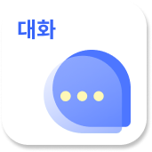
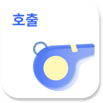
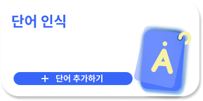

<title>HEARO 체험</title>
<link rel="preconnect" href="https://fonts.googleapis.com">
<link rel="preconnect" href="https://fonts.gstatic.com" crossorigin>
<link href="https://fonts.googleapis.com/css2?family=Black+Han+Sans&family=Noto+Sans+KR:wght@400;500;700&display=swap" rel="stylesheet">
<style>
/* 레이아웃 개념: 왼쪽은 읽는 이야기, 오른쪽은 계속 따라오는 실제 앱 화면(폰) + 워치.
   모바일에서는 소개 → 폰 → 이야기 순으로 쌓는다. */
:root {
  --bg: #F3F5FC;          /* 푸른 기가 도는 밝은 바탕 */
  --surface: #FFFFFF;
  --ink: #121A3A;         /* 앱 그라데이션과 같은 계열의 짙은 남색 */
  --muted: #566089;
  --line: #D8DDF1;
  --brand: #3B5BFF;       /* 앱 상단 그라데이션의 파랑 */
  --brand-ink: #FFFFFF;
  --brand-soft: #E4E9FF;
  --signal: #FFE500;      /* 앱의 노란 신호(내 말풍선·로고 점)와 같은 색 */
  --bezel: #12172E;
  --focus: #3B5BFF;
  --good: #1B7F57;
  --f-display: "Black Han Sans", "Noto Sans KR", "Apple SD Gothic Neo", "Malgun Gothic", sans-serif;
  --f-body: "Noto Sans KR", "Apple SD Gothic Neo", "Malgun Gothic", system-ui, sans-serif;
  --ws: 320px;            /* 폰 화면(안쪽) 폭 */
}
@media (prefers-color-scheme: dark) {
  :root:not([data-theme="light"]) {
    --bg: #0B1024; --surface: #141B38; --ink: #EEF1FF; --muted: #A3AED9; --line: #252E5A;
    --brand: #8CA2FF; --brand-ink: #0B1024; --brand-soft: #1B2552; --bezel: #04060E; --focus: #B3C1FF; --good: #5FD4A0;
    color-scheme: dark;
  }
}
:root[data-theme="dark"] {
  --bg: #0B1024; --surface: #141B38; --ink: #EEF1FF; --muted: #A3AED9; --line: #252E5A;
  --brand: #8CA2FF; --brand-ink: #0B1024; --brand-soft: #1B2552; --bezel: #04060E; --focus: #B3C1FF; --good: #5FD4A0;
  color-scheme: dark;
}

* { box-sizing: border-box; }
[hidden] { display: none !important; }   /* .el 의 display 가 hidden 속성을 덮지 않도록 (독립 호스팅에서도 동일) */
body { background: var(--bg); color: var(--ink); font-family: var(--f-body); font-size: 16px; line-height: 1.7; }
h1, h2 { font-family: var(--f-display); font-weight: 400; margin: 0; text-wrap: balance; letter-spacing: -0.01em; }
h3 { font-size: 1.1rem; margin: 0; line-height: 1.4; }
p { margin: 0; }
a { color: var(--brand); }
button { font: inherit; color: inherit; }
:focus-visible { outline: 3px solid var(--focus); outline-offset: 2px; }
.wrap { max-width: 1160px; margin-inline: auto; padding-inline: clamp(16px, 4vw, 32px); }
.sr { position: absolute; width: 1px; height: 1px; overflow: hidden; clip: rect(0 0 0 0); white-space: nowrap; }

/* ── 헤더 ───────────────────────────────── */
.top { position: sticky; top: env(safe-area-inset-top, 0px); z-index: 50; background: color-mix(in srgb, var(--bg) 88%, transparent); backdrop-filter: blur(10px); border-bottom: 1px solid var(--line); }
.top .wrap { display: flex; align-items: center; justify-content: space-between; gap: 16px; min-height: 56px; }
.mark { font-family: var(--f-display); font-size: 1.35rem; letter-spacing: 0.02em; display: inline-flex; align-items: baseline; gap: 3px; text-decoration: none; color: var(--ink); }
.mark i { width: 0.5em; height: 0.5em; border-radius: 50%; background: var(--signal); box-shadow: 0 0 0 2px var(--ink); display: inline-block; transform: translateY(-0.7em); }
.nav { display: flex; gap: clamp(12px, 2.4vw, 28px); font-size: 0.9rem; }
.nav a { color: var(--muted); text-decoration: none; padding: 6px 2px; }
.nav a:hover { color: var(--ink); }
@media (max-width: 640px) { .nav a:not(:first-child):not(:last-child) { display: none; } }

/* ── 본문 그리드 ─────────────────────────── */
.grid { display: grid; gap: 40px 56px; grid-template-columns: minmax(0, 1fr); grid-template-areas: "hero" "phone" "story"; padding-block: clamp(28px, 6vw, 64px) clamp(40px, 7vw, 88px); }
.hero { grid-area: hero; max-width: 640px; }
section[id] { scroll-margin-top: 72px; }
.story { grid-area: story; max-width: 640px; }
.phone-col { grid-area: phone; justify-self: center; width: min(100%, calc(var(--ws) + 20px)); position: relative; }
@media (min-width: 960px) {
  :root { --ws: clamp(236px, calc((100vh - 150px) * 0.4493), 330px); }
  .grid { grid-template-columns: minmax(0, 1fr) calc(var(--ws) + 20px); grid-template-areas: "hero phone" "story phone"; align-items: start; column-gap: clamp(56px, 8vw, 120px); }
  .hero, .story { padding-right: 28px; }
  .phone-col { position: sticky; top: calc(env(safe-area-inset-top, 0px) + 72px); align-self: start; justify-self: end; grid-row: 1 / span 2; }
}

/* ── 히어로 ─────────────────────────────── */
.eyebrow { display: inline-flex; align-items: center; gap: 8px; font-size: 0.9rem; font-weight: 700; color: var(--brand); margin-bottom: 18px; }
.eyebrow::before { content: ""; width: 22px; height: 3px; background: var(--signal); box-shadow: 0 0 0 1px var(--ink); border-radius: 2px; }
h1 { font-size: clamp(2.7rem, 7vw, 4.7rem); line-height: 1.1; }
h1 span { display: block; }
h1 span + span { color: var(--brand); }
.lead { margin-top: 22px; font-size: clamp(1.02rem, 1.6vw, 1.15rem); color: var(--muted); max-width: 34em; }
.try { margin-top: 32px; padding-top: 22px; border-top: 1px solid var(--line); }
.try-label { font-size: 0.9rem; font-weight: 700; color: var(--muted); margin-bottom: 10px; }
.btn-row { display: flex; flex-wrap: wrap; gap: 10px; }
.btn { appearance: none; cursor: pointer; border: 2px solid var(--ink); background: var(--surface); color: var(--ink); border-radius: 12px; padding: 12px 18px; font-weight: 700; line-height: 1.2; display: inline-flex; align-items: center; gap: 10px; transition: transform .12s ease, background .12s ease; }
.btn:hover { background: var(--brand-soft); }
.btn:active { transform: translateY(1px); }
.btn.primary { background: var(--brand); border-color: var(--brand); color: var(--brand-ink); }
.btn.primary:hover { background: var(--brand); filter: brightness(1.08); }
.btn svg { width: 20px; height: 20px; flex: none; }
.btn.small { padding: 8px 12px; font-size: 0.9rem; border-width: 1.5px; border-radius: 10px; }
.hint { margin-top: 12px; font-size: 0.9rem; color: var(--muted); }

/* 소리 → 신호 띠 */
.signal { margin-top: 20px; display: flex; align-items: center; gap: 14px; min-height: 52px; }
.wave { display: flex; align-items: center; gap: 3px; height: 40px; flex: none; }
.wave span { width: 4px; height: 8px; border-radius: 2px; background: var(--line); transition: background .2s; }
.wave.on span { background: var(--brand); animation: bar 0.7s ease-in-out infinite alternate; animation-delay: calc(var(--i) * -53ms); }
@keyframes bar { from { height: 6px; } to { height: var(--h, 34px); } }
.signal-text { font-size: 0.92rem; color: var(--muted); min-width: 0; flex: 1; }
@media (max-width: 520px) { .wave span:nth-child(n+17) { display: none; } }
.signal-text b { color: var(--ink); }
.signal-dot { width: 14px; height: 14px; border-radius: 50%; background: var(--line); flex: none; }
.signal.on .signal-dot { background: var(--signal); box-shadow: 0 0 0 2px var(--ink), 0 0 0 7px color-mix(in srgb, var(--signal) 45%, transparent); }

/* ── 이야기 ─────────────────────────────── */
.block { padding-top: clamp(40px, 6vw, 64px); }
.block + .block { margin-top: clamp(8px, 2vw, 24px); }
h2 { font-size: clamp(1.8rem, 3.6vw, 2.5rem); line-height: 1.2; }
.block > p { margin-top: 12px; color: var(--muted); max-width: 36em; }
.items { list-style: none; margin: 28px 0 0; padding: 0; display: grid; gap: 0; }
.item { display: grid; grid-template-columns: 112px minmax(0, 1fr); gap: 20px; padding-block: 22px; border-top: 1px solid var(--line); align-items: start; }
.item:last-child { border-bottom: 1px solid var(--line); }
.thumb { width: 112px; height: 112px; border-radius: 18px; background: linear-gradient(180deg, #3D63FF, #8EA6FF); display: grid; place-items: center; overflow: hidden; }
.thumb img { max-width: 86%; max-height: 86%; object-fit: contain; display: block; }
.thumb.wide img { max-width: 94%; }
.item p { margin-top: 6px; color: var(--muted); font-size: 0.98rem; }
.item .btn { margin-top: 12px; }
@media (max-width: 480px) { .item { grid-template-columns: 76px minmax(0, 1fr); gap: 14px; } .thumb { width: 76px; height: 76px; border-radius: 14px; } }

.tabs { display: flex; flex-wrap: wrap; gap: 8px; margin-top: 24px; }
.tab { appearance: none; cursor: pointer; border: 1.5px solid var(--line); background: var(--surface); border-radius: 999px; padding: 8px 16px; font-weight: 700; color: var(--muted); }
.tab[aria-pressed="true"] { background: var(--ink); border-color: var(--ink); color: var(--bg); }
.sounds { list-style: none; margin: 20px 0 0; padding: 0; display: grid; gap: 0; }
.sounds li { display: flex; align-items: center; justify-content: space-between; gap: 12px; padding: 11px 0; border-top: 1px solid var(--line); font-weight: 500; }
.sounds li:last-child { border-bottom: 1px solid var(--line); }
.sounds .n { color: var(--muted); font-variant-numeric: tabular-nums; width: 2ch; display: inline-block; }
.chip { font-size: 0.78rem; font-weight: 700; padding: 3px 10px; border-radius: 999px; white-space: nowrap; }
.chip.on { background: var(--brand-soft); color: var(--brand); }
.chip.off { border: 1px dashed var(--line); color: var(--muted); }
.note { margin-top: 14px; font-size: 0.9rem; color: var(--muted); }

/* ── 폰 / 워치 ───────────────────────────── */
.device { width: calc(var(--ws) + 20px); max-width: 100%; padding: 10px; background: var(--bezel); border-radius: 36px; box-shadow: 0 24px 50px -22px rgba(10, 18, 70, .55), 0 0 0 1px rgba(255,255,255,.06) inset; }
.device.shake { animation: shake .5s linear; }
@keyframes shake { 0%,100% { transform: translateX(0) } 15% { transform: translateX(-4px) rotate(-.6deg) } 30% { transform: translateX(4px) rotate(.6deg) } 45% { transform: translateX(-3px) } 60% { transform: translateX(3px) } 75% { transform: translateX(-2px) } }
.screen { position: relative; overflow: hidden; width: 100%; aspect-ratio: 412 / 917; border-radius: 27px; isolation: isolate; background: #4A6CFF url(img/main_1st.png) 0 0 / 100% 100% no-repeat; }
.screen.free { aspect-ratio: auto; border-radius: 14px; }
.stage { position: absolute; left: 0; top: 0; width: 412px; height: 917px; transform-origin: 0 0; isolation: isolate; font-family: var(--f-body); }
.el, .slot { position: absolute; margin: 0; padding: 0; border: 0; background: none; display: block; -webkit-tap-highlight-color: transparent; }
button.el { cursor: pointer; appearance: none; }
button.el:disabled { cursor: default; }
.el img { display: block; width: 100%; height: 100%; pointer-events: none; user-select: none; -webkit-user-drag: none; }
.el.bgimg { background-repeat: no-repeat; background-size: 100% 100%; }
.el[data-id="smallblue"] { transition: left .28s ease, top .28s ease; }
.stage .el:focus-visible { outline: 3px solid var(--signal); outline-offset: 2px; box-shadow: 0 0 0 6px rgba(20, 30, 200, .6); }
.static .stage * { pointer-events: none; }
.toast { position: absolute; left: 10px; right: 10px; top: 15%; z-index: 5; background: rgba(18, 26, 58, .94); color: #fff; font-size: 0.82rem; line-height: 1.45; padding: 9px 12px; border-radius: 10px; opacity: 0; transform: translateY(-8px); transition: opacity .2s, transform .2s; pointer-events: none; }
.toast.show { opacity: 1; transform: none; }
.cap { margin-top: 12px; display: flex; align-items: center; justify-content: space-between; gap: 8px; font-size: 0.85rem; color: var(--muted); }
.cap b { color: var(--ink); }

.watch { position: absolute; left: -102px; bottom: 96px; width: 108px; height: 108px; border-radius: 50%; padding: 5px; background: var(--bezel); box-shadow: 0 14px 30px -14px rgba(10,18,70,.6); z-index: 4; }
.watch.shake { animation: shake .5s linear; }
.wface { position: relative; width: 100%; height: 100%; border-radius: 50%; overflow: hidden; background: #4A6CFF url(img/main_1st.png) 0 0 / 100% 100% no-repeat; color: #fff; text-align: center; display: grid; place-items: center; }
.widle { display: grid; gap: 1px; justify-items: center; padding: 8px; line-height: 1.2; }
.widle img { width: 28px; height: 28px; object-fit: contain; }
.widle b { font-size: 8px; }
.widle span { font-size: 7px; opacity: .95; }
.widle time { font-size: 6.5px; opacity: .75; min-height: 8px; }
.walert { position: absolute; inset: 0; border: 0; padding: 12px 10px 17px; background: #fff; color: #000; display: grid; grid-template-rows: minmax(0, 1fr) auto; gap: 4px; justify-items: center; cursor: pointer; }
.walert img { max-width: 100%; max-height: 100%; object-fit: contain; min-height: 0; }
.walert span { font-size: 7.5px; font-weight: 700; line-height: 1.2; padding-bottom: 0; white-space: nowrap; }
.wlabel { position: absolute; left: -102px; bottom: 40px; width: 108px; text-align: center; font-size: 0.72rem; line-height: 1.35; color: var(--muted); pointer-events: none; }
@media (max-width: 959px) {
  .watch { position: relative; left: auto; bottom: auto; margin: 22px auto 0; width: 124px; height: 124px; }
  .wlabel { position: static; margin: 8px auto 0; width: auto; pointer-events: auto; }
}

/* 채팅/다이얼로그(앱의 XML 값을 그대로 옮김) */
.chatstage { background: #fff; color: #1b1b1b; display: flex; flex-direction: column; }
.ch-h { height: 56px; flex: none; background: #5B6FFF; display: flex; align-items: center; padding: 8px; color: #fff; gap: 4px; }
.ch-h .ib { width: 36px; height: 36px; border: 0; background: none; color: #fff; display: grid; place-items: center; cursor: pointer; border-radius: 8px; padding: 0; }
.ch-h .ib svg { width: 24px; height: 24px; }
.ch-h .t { flex: 1; text-align: center; font-size: 20px; font-weight: 700; }
.ch-h .tb { height: 40px; padding: 0 12px; border: 0; background: none; color: #fff; font-size: 14px; cursor: pointer; border-radius: 8px; }
.ch-list { flex: 1; min-height: 0; overflow-y: auto; padding: 8px; display: flex; flex-direction: column; gap: 0; }
.ch-row { display: flex; padding: 8px; }
.ch-row.me { justify-content: flex-end; }
.bub { max-width: 78%; padding: 12px; border-radius: 16px; font-size: 16px; line-height: 1.45; background: #EEEEEE; overflow-wrap: anywhere; }
.ch-row.me .bub { background: #FFE500; }
.ch-in { flex: none; background: #F5F5F5; padding: 8px; display: flex; align-items: center; gap: 8px; }
.ch-in .sq { width: 44px; height: 44px; flex: none; border: 0; border-radius: 8px; background: #EEEEEE; display: grid; place-items: center; cursor: pointer; padding: 0; color: #222; }
.ch-in .sq.y { background: #FFE500; }
.ch-in .sq svg { width: 24px; height: 24px; }
.ch-in input { flex: 1; min-width: 0; border: 0; background: #fff; padding: 12px; font: inherit; font-size: 16px; border-radius: 0; height: 44px; color: #111; }
.scrim { position: absolute; inset: 0; background: rgba(0,0,0,.5); display: grid; align-items: center; padding: 0 40px; z-index: 5000000; }
.card { background: #fff; border-radius: 16px; padding: 24px; color: #333; }
.card .ct { font-size: 18px; font-weight: 700; color: #5B6FFF; margin-bottom: 16px; }
.card .cb { font-size: 16px; line-height: 1.6; margin-bottom: 24px; }
.card .ok { width: 100%; height: 48px; border: 0; border-radius: 12px; background: #5B6FFF; color: #fff; font-size: 16px; font-weight: 700; cursor: pointer; }
.slot.field { background: url(img/textinput.png) 0 0 / 100% 100% no-repeat; }
.slot.field input { width: 100%; height: 100%; border: 0; background: none; padding: 0 12px 0 14px; font: inherit; font-size: 14px; color: #000; }
.slot.field input::placeholder { color: #999; }
.slot.list { overflow-y: auto; scrollbar-width: none; }
.wrow, .arow { display: flex; align-items: center; gap: 4px; padding: 8px; }
.wname { flex: 1; min-width: 0; background: #fff; font-size: 14px; font-weight: 700; color: #000; padding: 4px 8px; white-space: nowrap; overflow: hidden; text-overflow: ellipsis; }
.rbtn { border: 0; background: none; padding: 0; cursor: pointer; flex: none; display: block; }
.rbtn img { width: 100%; height: 100%; display: block; object-fit: contain; }
.arow { padding: 12px; }
.aname { flex: 1; min-width: 0; font-size: 16px; color: #000; padding: 8px; white-space: nowrap; overflow: hidden; text-overflow: ellipsis; }
.arow.play { background: rgba(91, 111, 255, .12); }

/* ── 화면 크기 비교 ──────────────────────── */
.adapt { padding-block: clamp(40px, 7vw, 88px); border-top: 1px solid var(--line); background: var(--surface); }
.adapt h2 + p { margin-top: 14px; color: var(--muted); max-width: 40em; }
.chips { display: flex; flex-wrap: wrap; gap: 8px; margin-top: 28px; }
.compare { margin-top: 28px; display: grid; gap: 32px 40px; grid-template-columns: repeat(auto-fit, minmax(min(100%, 300px), 1fr)); align-items: start; }
.cmp { min-width: 0; display: grid; gap: 12px; justify-items: start; }
.cmp h3 { display: flex; align-items: center; gap: 10px; }
.tag { font-size: 0.74rem; font-weight: 700; padding: 3px 9px; border-radius: 999px; }
.tag.bad { background: color-mix(in srgb, #E5484D 16%, transparent); color: #D12F35; }
.tag.good { background: color-mix(in srgb, var(--good) 18%, transparent); color: var(--good); }
:root[data-theme="dark"] .tag.bad { color: #FF8A8E; }
@media (prefers-color-scheme: dark) { :root:not([data-theme="light"]) .tag.bad { color: #FF8A8E; } }
.dev { background: var(--bezel); padding: 7px; border-radius: 18px; }
.cmp p { font-size: 0.92rem; color: var(--muted); max-width: 30em; }
.tbl { margin-top: 36px; overflow-x: auto; }
table { border-collapse: collapse; width: 100%; min-width: 520px; font-size: 0.92rem; }
th, td { text-align: left; padding: 10px 14px 10px 0; border-bottom: 1px solid var(--line); vertical-align: top; }
th { font-size: 0.8rem; color: var(--muted); font-weight: 700; }
td.num { font-variant-numeric: tabular-nums; }
tr.cur td { font-weight: 700; }
.foot { padding-block: 40px 56px; color: var(--muted); font-size: 0.9rem; border-top: 1px solid var(--line); }
.foot p { max-width: 46em; }
.foot p + p { margin-top: 8px; }
@media (prefers-reduced-motion: reduce) {
  .device.shake, .watch.shake { animation: none; }
  .wave.on span { animation: none; height: 24px; }
  .el[data-id="smallblue"] { transition: none; }
  .btn, .toast { transition: none; }
}
</style>

<header class="top">
  <div class="wrap">
    <a class="mark" href="#top" aria-label="HEARO 처음으로">HEARO<i aria-hidden="true"></i></a>
    <nav class="nav" aria-label="페이지 구역">
      <a href="#features">기능</a>
      <a href="#modes">소리 설정</a>
      <a href="#adaptive">화면 크기</a>
    </nav>
  </div>
</header>

<main id="top">
  <div class="wrap grid">

    <section class="hero" aria-labelledby="h1">
      <p class="eyebrow">청각장애인을 위한 소리 알림 앱</p>
      <h1 id="h1"><span>들리지 않아도,</span><span>놓치지 않게.</span></h1>
      <p class="lead">HEARO는 초인종과 아기 울음소리를 감지해 화면, 진동, 스마트워치로 알려 줍니다. 말하기 어려운 순간을 위한 대화와 호출 기능도 들어 있어요.</p>

      <div class="try">
        <p class="try-label">소리가 났다고 해 볼게요</p>
        <div class="btn-row">
          <button class="btn primary" type="button" id="sim-doorbell">
            <svg viewBox="0 0 24 24" fill="currentColor" aria-hidden="true"><path d="M12 22a2 2 0 0 0 2-2h-4a2 2 0 0 0 2 2Zm6-6v-5a6 6 0 0 0-4.5-5.8V4a1.5 1.5 0 0 0-3 0v1.2A6 6 0 0 0 6 11v5l-2 2v1h16v-1l-2-2Z"/></svg>
            초인종이 울릴 때
          </button>
          <button class="btn" type="button" id="sim-baby">
            <svg viewBox="0 0 24 24" fill="none" stroke="currentColor" stroke-width="2" stroke-linecap="round" aria-hidden="true"><circle cx="12" cy="12" r="8"/><path d="M9 10v.01M15 10v.01M9.5 15c1.5-1.2 3.5-1.2 5 0"/></svg>
            아기가 울 때
          </button>
        </div>
        <div class="signal" id="signal">
          <span class="signal-dot" aria-hidden="true"></span>
          <div class="wave" id="wave" aria-hidden="true"></div>
          <p class="signal-text" id="signal-text" role="status" aria-live="polite">소리를 기다리는 중</p>
        </div>
        <p class="hint">폰 화면도 직접 눌러 볼 수 있어요. 모드 아이콘, 알림 스위치, 대화하기까지.</p>
      </div>
    </section>

    <aside class="phone-col" id="phone-col" aria-label="앱 체험 화면">
      <div class="device" id="device">
        <div class="screen" id="screen" role="group" aria-label="HEARO 앱 화면"></div>
      </div>
      <div class="cap">
        <span>현재 화면 <b id="screen-name">메인</b></span>
        <button class="btn small" type="button" id="to-main">메인으로</button>
      </div>
      <div class="watch" id="watch" role="group" aria-label="워치 화면 예시">
        <div class="wface" id="wface">
          <div class="widle">
            
            <b>소리 감지 모드</b>
            <span id="w-last">감지된 소리 없음</span>
            <time id="w-time"></time>
          </div>
        </div>
      </div>
      <p class="wlabel">폰이 감지하면<br>워치도 울려요</p>
    </aside>

    <div class="story">
      <section class="block" id="features" aria-labelledby="h-features">
        <h2 id="h-features">무엇을 해 주나요</h2>
        <p>소리를 눈으로 보게 하는 일이 중심이고, 말하고 부르는 일을 거들어 줍니다.</p>
        <ul class="items">
          <li class="item">
            <div class="thumb"></div>
            <div>
              <h3>소리 감지</h3>
              <p>초인종과 아기 울음소리를 계속 듣고, 감지하면 큰 아이콘과 배너가 뜨고 진동이 울립니다. 앱을 보고 있지 않아도 알림으로 알려 줍니다.</p>
              <button class="btn small" type="button" data-sim="doorbell">감지된 모습 보기</button>
            </div>
          </li>
          <li class="item">
            <div class="thumb"></div>
            <div>
              <h3>대화</h3>
              <p>내가 쓴 글은 음성으로 읽어 주고, 상대방 말은 글자로 바꿔 보여 줍니다. 처음 열면 "저는 청각장애인입니다"라는 안내를 상대에게 읽어 줍니다. 대화는 저장해 두고 다시 볼 수 있어요.</p>
              <button class="btn small" type="button" data-open="chat">폰에서 열기</button>
            </div>
          </li>
          <li class="item">
            <div class="thumb"></div>
            <div>
              <h3>호출</h3>
              <p>미리 올려 둔 음성을 눌러 재생해 주변 사람을 부릅니다. 소리를 낼 수 없을 때 손가락 하나로 "여기요"를 전할 수 있어요.</p>
              <button class="btn small" type="button" data-open="hochul">폰에서 열기</button>
            </div>
          </li>
          <li class="item">
            <div class="thumb wide"></div>
            <div>
              <h3>단어 인식</h3>
              <p>등록해 둔 단어, 예를 들어 내 이름이나 "택배"가 대화 속에서 들리면 진동과 팝업으로 알려 줍니다.</p>
              <div class="btn-row">
                <button class="btn small" type="button" data-open="word">폰에서 열기</button>
                <button class="btn small" type="button" id="word-hit">단어가 들린 순간 보기</button>
              </div>
            </div>
          </li>
          <li class="item">
            <div class="thumb"></div>
            <div>
              <h3>워치 알림</h3>
              <p>폰이 소리를 감지하면 Wear OS 워치에도 진동과 전체 화면 알림이 갑니다. 폰 옆의 워치가 같이 반응하는 걸 위에서 확인해 보세요.</p>
              <button class="btn small" type="button" data-sim="baby">아기 울음으로 보기</button>
            </div>
          </li>
        </ul>
      </section>

      <section class="block" id="modes" aria-labelledby="h-modes">
        <h2 id="h-modes">모드마다 다른 소리 설정</h2>
        <p>집, 운전, 직장, 대중교통, 학교에서 신경 써야 하는 소리가 달라서 모드마다 목록이 다릅니다. 모드를 고르면 폰에 그 화면이 열리고, 스위치도 눌러 볼 수 있어요.</p>
        <div class="tabs" id="mode-tabs" role="group" aria-label="모드 선택"></div>
        <ol class="sounds" id="sound-list" aria-live="polite"></ol>
        <p class="note">지금 실제로 감지하는 소리는 초인종과 아기 울음소리입니다. 나머지는 설정 화면만 먼저 있고 감지는 준비 중이에요.</p>
      </section>
    </div>
  </div>

  <section class="adapt" id="adaptive" aria-labelledby="h-adapt">
    <div class="wrap">
      <h2 id="h-adapt">어떤 화면에서도 그대로</h2>
      <p>예전에는 아이콘 위치를 고정된 dp 좌표로 박아 두어서, 화면이 달라지면 일부가 잘리거나 배경 그림과 어긋났습니다. 이제는 412×917dp 디자인을 비율 그대로 통째로 키우고 줄여서 모든 요소가 제자리에 있습니다.</p>
      <div class="chips" id="dev-chips" role="group" aria-label="기기 크기 선택"></div>
      <div class="compare" id="compare"></div>
      <div class="tbl">
        <table>
          <caption class="sr">기기 크기별 배율과 이전 방식의 결과</caption>
          <thead><tr><th scope="col">기기</th><th scope="col">새 방식 배율</th><th scope="col">이전 방식</th></tr></thead>
          <tbody id="dev-rows"></tbody>
        </table>
      </div>
    </div>
  </section>
</main>

<footer class="foot">
  <div class="wrap">
    <p>이 페이지는 안드로이드 앱 HEARO의 화면을 브라우저에서 다시 그린 체험판입니다. 이미지와 문구는 앱 리소스를 그대로 가져왔습니다.</p>
    <p>소리 감지는 마이크가 필요해서 앱에서만 동작합니다. 웹 브라우저는 화면이 꺼지면 마이크가 멈추기 때문에 상시 감지를 할 수 없어요.</p>
  </div>
</footer>

<script>
window.__HEARO__ = {"canvas":[412,917],"screens":{"main":{"bg":"main_1st","els":[{"id":"home","x":17.0,"y":155.0,"z":0.0,"o":1,"click":true,"label":"홈 모드","t":"img","img":"home","w":68.0,"h":77.0,"fit":"contain"},{"id":"work","x":337.0,"y":170.0,"z":0.0,"o":2,"label":"직장 모드","t":"img","img":"work","w":43.0,"h":55.0,"fit":"contain"},{"id":"school","x":314.0,"y":337.0,"z":0.0,"o":3,"label":"학교 모드","t":"img","img":"school","w":48.0,"h":55.0,"fit":"contain"},{"id":"transit","x":44.0,"y":345.0,"z":0.0,"o":4,"label":"대중교통 모드","t":"img","img":"transit","w":52.0,"h":48.0,"fit":"contain"},{"id":"driving","x":178.0,"y":65.0,"z":0.0,"o":5,"click":true,"label":"운전 모드","t":"img","img":"driving","w":55.0,"h":50.0,"fit":"contain"},{"id":"mymenu","x":151.0,"y":380.0,"z":0.0,"o":6,"click":true,"label":"내 모드","t":"img","img":"mymenu1","w":104.0,"h":66.0,"fit":"contain"},{"id":"yellowcircle","x":78.0,"y":129.0,"z":0.0,"o":7,"deco":true,"t":"bg","img":"yellowcircle","w":256.0,"h":256.0,"fit":"contain"},{"id":"whitecircle","x":109.0,"y":166.0,"z":10.0,"o":8,"deco":true,"t":"img","img":"whitecircle","w":188,"h":188,"fit":"contain"},{"id":"smallblue","x":89.0,"y":199.0,"z":7.0,"o":9,"deco":true,"t":"bg","img":"smallblue","w":40.0,"h":39.0,"fit":"contain"},{"id":"bighome","x":0.0,"y":0.0,"z":15.0,"o":10,"label":"현재 모드: 홈","t":"img","img":"bighome","w":134.0,"h":147.0,"fit":"contain"},{"id":"offAlarmOffIcon","x":138.0,"y":212.0,"z":15.0,"o":11,"gone":true,"label":"알림이 꺼져 있습니다","t":"img","img":"offalarmoff","w":134.0,"h":147.0,"fit":"contain"},{"id":"bigdriving","x":0.0,"y":0.0,"z":15.0,"o":12,"gone":true,"label":"현재 모드: 운전","t":"img","img":"bigdriving","w":134.0,"h":147.0,"fit":"contain"},{"id":"bigwork","x":0.0,"y":0.0,"z":15.0,"o":13,"gone":true,"label":"현재 모드: 직장","t":"img","img":"bigwork","w":134.0,"h":147.0,"fit":"contain"},{"id":"bigschool","x":0.0,"y":0.0,"z":15.0,"o":14,"gone":true,"label":"현재 모드: 학교","t":"img","img":"bigschool","w":134.0,"h":147.0,"fit":"contain"},{"id":"bigtransit","x":0.0,"y":0.0,"z":15.0,"o":15,"gone":true,"label":"현재 모드: 대중교통","t":"img","img":"bigtransit","w":134.0,"h":147.0,"fit":"contain"},{"id":"bigmymode","x":0.0,"y":0.0,"z":15.0,"o":16,"gone":true,"label":"현재 모드: 내 모드","t":"img","img":"bigmymode1","w":138.0,"h":145.0,"fit":"contain"},{"id":"lefthighhero","x":23.0,"y":15.0,"z":0.0,"o":17,"deco":true,"t":"bg","img":"lefthighhearo","w":108.0,"h":26.0,"fit":"contain"},{"id":"lefttalk","x":35.0,"y":445.0,"z":20.0,"o":18,"click":true,"label":"대화하기","t":"img","img":"lefttalk","w":163.0,"h":163.0,"fit":"contain"},{"id":"righthochul","x":207.0,"y":445.0,"z":0.0,"o":19,"click":true,"label":"호출하기","t":"img","img":"hochul1","w":163.0,"h":163.0,"fit":"contain"},{"id":"wordinsik","x":35.0,"y":625.0,"z":0.0,"o":20,"click":true,"label":"단어 인식","t":"img","img":"wordinsik","w":335.0,"h":163.0,"fit":"contain"},{"id":"background1","x":0.0,"y":542.0,"z":-10.0,"o":21,"deco":true,"t":"bg","img":"background1","w":412.0,"h":428.0,"fit":"contain"},{"id":"jjinhadansetting","x":339.0,"y":841.0,"z":4.0,"o":22,"click":true,"label":"설정","t":"img","img":"jjinhadansetting","w":56.0,"h":56.0,"fit":"contain"},{"id":"doorbellDetectionImage","x":19.0,"y":28.0,"z":20.0,"o":23,"gone":true,"click":true,"label":"초인종 소리가 감지되었습니다. 누르면 닫습니다","t":"img","img":"choinjongnotice1","w":373.0,"h":59.0,"fit":"contain"},{"id":"doorbellDetectionImage1","x":147.0,"y":167.0,"z":15.0,"o":24,"gone":true,"click":true,"label":"초인종 소리가 감지되었습니다. 누르면 닫습니다","t":"img","img":"choinjong1","w":117.0,"h":138.0,"fit":"contain"},{"id":"babycryingDetectionImage","x":19.0,"y":28.0,"z":20.0,"o":25,"gone":true,"click":true,"label":"아기 울음소리가 감지되었습니다. 누르면 닫습니다","t":"img","img":"babycryingnotice1","w":373.0,"h":59.0,"fit":"contain"},{"id":"babycryingDetectionImage1","x":147.0,"y":187.0,"z":15.0,"o":26,"gone":true,"click":true,"label":"아기 울음소리가 감지되었습니다. 누르면 닫습니다","t":"img","img":"babycrying1","w":117.0,"h":138.0,"fit":"contain"},{"id":"alarmOnIcon","x":298.0,"y":14.0,"z":0.0,"o":27,"click":true,"label":"알림이 켜져 있습니다. 누르면 알림을 끕니다","t":"img","img":"mainalarmon","w":38.0,"h":65.0,"fit":"contain"},{"id":"alarmOffIcon","x":298.0,"y":14.0,"z":0.0,"o":28,"gone":true,"click":true,"label":"알림이 꺼져 있습니다. 누르면 알림을 켭니다","t":"img","img":"mainalarmoff","w":38.0,"h":65.0,"fit":"contain"},{"id":"soundSettingIcon","x":346.0,"y":14.0,"z":0.0,"o":29,"click":true,"label":"소리 설정","t":"img","img":"mainsoundsetting","w":30.0,"h":48.0,"fit":"contain"}]},"sound_home":{"bg":"main_1st","els":[{"id":"lefthighhero","x":23.0,"y":15.0,"z":0.0,"o":1,"deco":true,"t":"bg","img":"lefthighhearo","w":108.0,"h":26.0,"fit":"contain"},{"id":"group_277","x":320.0,"y":15.0,"z":0.0,"o":2,"deco":true,"t":"img","img":"righthighhome","w":78.0,"h":38.0,"fit":"contain"},{"id":"bighome","x":104.0,"y":136.0,"z":15.0,"o":3,"label":"현재 모드: 홈","t":"img","img":"bighome","w":173.0,"h":176.0,"fit":"contain"},{"id":"sssmiddle1","x":31.0,"y":59.0,"z":0.0,"o":4,"deco":true,"t":"img","img":"sssmiddle1","w":329.0,"h":329.0,"fit":"contain"},{"id":"sssmalblue1","x":33.0,"y":200.0,"z":7.0,"o":5,"deco":true,"t":"bg","img":"sssmallblue1","w":44.0,"h":43.0,"fit":"contain"},{"id":"ssswhitebackground1","x":-5.0,"y":398.0,"z":0.0,"o":6,"deco":true,"t":"bg","img":"ssswhitebackground1","w":412.0,"h":521.0,"fit":"contain"},{"id":"ssssoundcontrol1","x":28.0,"y":409.0,"z":0.0,"o":7,"label":"소리 종류별 알림 설정","t":"img","img":"ssssoundcontrol1","w":351.0,"h":354.0,"fit":"contain"},{"id":"sw1","x":276.0,"y":498.0,"z":0.0,"o":8,"label":"소리 알림 스위치","t":"img","img":"ssonswitch","w":45.0,"h":20.0,"fit":"contain"},{"id":"sw2","x":277.0,"y":533.0,"z":0.0,"o":9,"label":"소리 알림 스위치","t":"img","img":"ssonswitch","w":45.0,"h":20.0,"fit":"contain"},{"id":"sw3","x":276.0,"y":568.0,"z":0.0,"o":10,"label":"소리 알림 스위치","t":"img","img":"ssonswitch","w":45.0,"h":20.0,"fit":"contain"},{"id":"sw4","x":276.0,"y":603.0,"z":0.0,"o":11,"label":"소리 알림 스위치","t":"img","img":"ssonswitch","w":45.0,"h":20.0,"fit":"contain"},{"id":"sw5","x":276.0,"y":638.0,"z":0.0,"o":12,"label":"소리 알림 스위치","t":"img","img":"ssonswitch","w":45.0,"h":20.0,"fit":"contain"},{"id":"sw6","x":276.0,"y":673.0,"z":0.0,"o":13,"label":"소리 알림 스위치","t":"img","img":"ssonswitch","w":45.0,"h":20.0,"fit":"contain"},{"id":"sw7","x":276.0,"y":708.0,"z":0.0,"o":14,"label":"소리 알림 스위치","t":"img","img":"ssonswitch","w":45.0,"h":20.0,"fit":"contain"},{"id":"jjinhadanhome","x":16.0,"y":753.0,"z":4.0,"o":15,"click":true,"label":"홈으로 돌아가기","t":"bg","img":"jjinhadanhome","w":38.0,"h":42.0,"fit":"contain"}]},"sound_transit":{"bg":"main_1st","els":[{"id":"lefthighhero","x":23.0,"y":15.0,"z":0.0,"o":1,"deco":true,"t":"bg","img":"lefthighhearo","w":108.0,"h":26.0,"fit":"contain"},{"id":"group_277","x":277.0,"y":0.0,"z":0.0,"o":2,"deco":true,"t":"img","img":"righthightransit","w":150.0,"h":59.0,"fit":"contain"},{"id":"bigtransit","x":113.0,"y":156.0,"z":15.0,"o":3,"label":"현재 모드: 대중교통","t":"img","img":"bigtransit","w":155.0,"h":155.0,"fit":"contain"},{"id":"sssmiddle1","x":31.0,"y":60.0,"z":0.0,"o":4,"deco":true,"t":"img","img":"sssmiddle1","w":329.0,"h":329.0,"fit":"contain"},{"id":"sssmalblue1","x":55.0,"y":286.0,"z":7.0,"o":5,"deco":true,"t":"bg","img":"sssmallblue1","w":44.0,"h":43.0,"fit":"contain"},{"id":"ssswhitebackground1","x":-5.0,"y":398.0,"z":0.0,"o":6,"deco":true,"t":"bg","img":"ssswhitebackground1","w":412.0,"h":521.0,"fit":"contain"},{"id":"ssssoundcontrol2","x":28.0,"y":409.0,"z":0.0,"o":7,"label":"소리 종류별 알림 설정","t":"img","img":"ssssoundcontrol2","w":351.0,"h":354.0,"fit":"contain"},{"id":"sw1","x":276.0,"y":498.0,"z":0.0,"o":8,"label":"소리 알림 스위치","t":"img","img":"ssonswitch","w":45.0,"h":20.0,"fit":"contain"},{"id":"sw2","x":277.0,"y":533.0,"z":0.0,"o":9,"label":"소리 알림 스위치","t":"img","img":"ssonswitch","w":45.0,"h":20.0,"fit":"contain"},{"id":"sw3","x":276.0,"y":568.0,"z":0.0,"o":10,"label":"소리 알림 스위치","t":"img","img":"ssonswitch","w":45.0,"h":20.0,"fit":"contain"},{"id":"sw4","x":276.0,"y":603.0,"z":0.0,"o":11,"label":"소리 알림 스위치","t":"img","img":"ssonswitch","w":45.0,"h":20.0,"fit":"contain"},{"id":"sw5","x":276.0,"y":638.0,"z":0.0,"o":12,"label":"소리 알림 스위치","t":"img","img":"ssonswitch","w":45.0,"h":20.0,"fit":"contain"},{"id":"sw6","x":276.0,"y":673.0,"z":0.0,"o":13,"label":"소리 알림 스위치","t":"img","img":"ssonswitch","w":45.0,"h":20.0,"fit":"contain"},{"id":"jjinhadanhome","x":16.0,"y":753.0,"z":4.0,"o":14,"click":true,"label":"홈으로 돌아가기","t":"bg","img":"jjinhadanhome","w":38.0,"h":42.0,"fit":"contain"}]},"sound_driving":{"bg":"main_1st","els":[{"id":"lefthighhero","x":23.0,"y":15.0,"z":0.0,"o":1,"deco":true,"t":"bg","img":"lefthighhearo","w":108.0,"h":26.0,"fit":"contain"},{"id":"group_277","x":291.0,"y":7.0,"z":0.0,"o":2,"deco":true,"t":"img","img":"righthighdriving","w":102.0,"h":55.0,"fit":"contain"},{"id":"bigdriving","x":115.0,"y":158.0,"z":15.0,"o":3,"label":"현재 모드: 운전","t":"img","img":"bigdriving","w":164.0,"h":147.0,"fit":"contain"},{"id":"sssmiddle1","x":31.0,"y":60.0,"z":0.0,"o":4,"deco":true,"t":"img","img":"sssmiddle1","w":329.0,"h":329.0,"fit":"contain"},{"id":"sssmalblue1","x":174.0,"y":64.0,"z":7.0,"o":5,"deco":true,"t":"bg","img":"sssmallblue1","w":44.0,"h":43.0,"fit":"contain"},{"id":"ssswhitebackground1","x":-5.0,"y":398.0,"z":0.0,"o":6,"deco":true,"t":"bg","img":"ssswhitebackground1","w":412.0,"h":521.0,"fit":"contain"},{"id":"ssssoundcontrol1","x":28.0,"y":409.0,"z":0.0,"o":7,"label":"소리 종류별 알림 설정","t":"img","img":"ssssoundcontrol3","w":351.0,"h":354.0,"fit":"contain"},{"id":"sw1","x":276.0,"y":498.0,"z":0.0,"o":8,"label":"소리 알림 스위치","t":"img","img":"ssonswitch","w":45.0,"h":20.0,"fit":"contain"},{"id":"sw2","x":277.0,"y":533.0,"z":0.0,"o":9,"label":"소리 알림 스위치","t":"img","img":"ssonswitch","w":45.0,"h":20.0,"fit":"contain"},{"id":"sw3","x":276.0,"y":568.0,"z":0.0,"o":10,"label":"소리 알림 스위치","t":"img","img":"ssonswitch","w":45.0,"h":20.0,"fit":"contain"},{"id":"sw4","x":276.0,"y":603.0,"z":0.0,"o":11,"label":"소리 알림 스위치","t":"img","img":"ssonswitch","w":45.0,"h":20.0,"fit":"contain"},{"id":"sw5","x":276.0,"y":638.0,"z":0.0,"o":12,"label":"소리 알림 스위치","t":"img","img":"ssonswitch","w":45.0,"h":20.0,"fit":"contain"},{"id":"sw6","x":276.0,"y":673.0,"z":0.0,"o":13,"label":"소리 알림 스위치","t":"img","img":"ssonswitch","w":45.0,"h":20.0,"fit":"contain"},{"id":"jjinhadanhome","x":16.0,"y":753.0,"z":4.0,"o":14,"click":true,"label":"홈으로 돌아가기","t":"bg","img":"jjinhadanhome","w":38.0,"h":42.0,"fit":"contain"}]},"sound_work":{"bg":"main_1st","els":[{"id":"lefthighhero","x":23.0,"y":15.0,"z":0.0,"o":1,"deco":true,"t":"bg","img":"lefthighhearo","w":108.0,"h":26.0,"fit":"contain"},{"id":"group_277","x":274.0,"y":7.0,"z":0.0,"o":2,"deco":true,"t":"img","img":"righthighwork","w":102.0,"h":55.0,"fit":"contain"},{"id":"bigwork","x":90.0,"y":145.0,"z":15.0,"o":3,"label":"현재 모드: 직장","t":"img","img":"bigwork","w":208.0,"h":172.0,"fit":"contain"},{"id":"sssmiddle1","x":31.0,"y":60.0,"z":0.0,"o":4,"deco":true,"t":"img","img":"sssmiddle1","w":329.0,"h":329.0,"fit":"contain"},{"id":"sssmalblue1","x":297.0,"y":141.0,"z":7.0,"o":5,"deco":true,"t":"bg","img":"sssmallblue1","w":44.0,"h":43.0,"fit":"contain"},{"id":"ssswhitebackground1","x":-5.0,"y":398.0,"z":0.0,"o":6,"deco":true,"t":"bg","img":"ssswhitebackground1","w":412.0,"h":521.0,"fit":"contain"},{"id":"ssssoundcontrol1","x":28.0,"y":409.0,"z":0.0,"o":7,"label":"소리 종류별 알림 설정","t":"img","img":"ssssoundcontrol4","w":351.0,"h":354.0,"fit":"contain"},{"id":"sw1","x":276.0,"y":498.0,"z":0.0,"o":8,"label":"소리 알림 스위치","t":"img","img":"ssonswitch","w":45.0,"h":20.0,"fit":"contain"},{"id":"sw2","x":277.0,"y":533.0,"z":0.0,"o":9,"label":"소리 알림 스위치","t":"img","img":"ssonswitch","w":45.0,"h":20.0,"fit":"contain"},{"id":"sw3","x":276.0,"y":568.0,"z":0.0,"o":10,"label":"소리 알림 스위치","t":"img","img":"ssonswitch","w":45.0,"h":20.0,"fit":"contain"},{"id":"sw4","x":276.0,"y":603.0,"z":0.0,"o":11,"label":"소리 알림 스위치","t":"img","img":"ssonswitch","w":45.0,"h":20.0,"fit":"contain"},{"id":"sw5","x":276.0,"y":638.0,"z":0.0,"o":12,"label":"소리 알림 스위치","t":"img","img":"ssonswitch","w":45.0,"h":20.0,"fit":"contain"},{"id":"sw6","x":276.0,"y":673.0,"z":0.0,"o":13,"label":"소리 알림 스위치","t":"img","img":"ssonswitch","w":45.0,"h":20.0,"fit":"contain"},{"id":"jjinhadanhome","x":16.0,"y":753.0,"z":4.0,"o":14,"click":true,"label":"홈으로 돌아가기","t":"bg","img":"jjinhadanhome","w":38.0,"h":42.0,"fit":"contain"}]},"sound_school":{"bg":"main_1st","els":[{"id":"lefthighhero","x":23.0,"y":15.0,"z":0.0,"o":1,"deco":true,"t":"bg","img":"lefthighhearo","w":108.0,"h":26.0,"fit":"contain"},{"id":"group_277","x":284.0,"y":7.0,"z":0.0,"o":2,"deco":true,"t":"img","img":"righthighschool","w":102.0,"h":55.0,"fit":"contain"},{"id":"bigschool","x":109.0,"y":134.0,"z":15.0,"o":3,"label":"현재 모드: 학교","t":"img","img":"bigschool","w":164.0,"h":177.0,"fit":"contain"},{"id":"sssmiddle1","x":31.0,"y":60.0,"z":0.0,"o":4,"deco":true,"t":"img","img":"sssmiddle1","w":329.0,"h":329.0,"fit":"contain"},{"id":"sssmalblue1","x":293.0,"y":281.0,"z":7.0,"o":5,"deco":true,"t":"bg","img":"sssmallblue1","w":44.0,"h":43.0,"fit":"contain"},{"id":"ssswhitebackground1","x":-5.0,"y":398.0,"z":0.0,"o":6,"deco":true,"t":"bg","img":"ssswhitebackground1","w":412.0,"h":521.0,"fit":"contain"},{"id":"ssssoundcontrol5","x":28.0,"y":409.0,"z":0.0,"o":7,"label":"소리 종류별 알림 설정","t":"img","img":"ssssoundcontrol5","w":351.0,"h":354.0,"fit":"contain"},{"id":"sw1","x":276.0,"y":498.0,"z":0.0,"o":8,"label":"소리 알림 스위치","t":"img","img":"ssonswitch","w":45.0,"h":20.0,"fit":"contain"},{"id":"sw2","x":277.0,"y":533.0,"z":0.0,"o":9,"label":"소리 알림 스위치","t":"img","img":"ssonswitch","w":45.0,"h":20.0,"fit":"contain"},{"id":"sw3","x":276.0,"y":568.0,"z":0.0,"o":10,"label":"소리 알림 스위치","t":"img","img":"ssonswitch","w":45.0,"h":20.0,"fit":"contain"},{"id":"sw4","x":276.0,"y":603.0,"z":0.0,"o":11,"label":"소리 알림 스위치","t":"img","img":"ssonswitch","w":45.0,"h":20.0,"fit":"contain"},{"id":"sw5","x":276.0,"y":638.0,"z":0.0,"o":12,"label":"소리 알림 스위치","t":"img","img":"ssonswitch","w":45.0,"h":20.0,"fit":"contain"},{"id":"sw6","x":276.0,"y":673.0,"z":0.0,"o":13,"label":"소리 알림 스위치","t":"img","img":"ssonswitch","w":45.0,"h":20.0,"fit":"contain"},{"id":"sw7","x":276.0,"y":708.0,"z":0.0,"o":14,"label":"소리 알림 스위치","t":"img","img":"ssonswitch","w":45.0,"h":20.0,"fit":"contain"},{"id":"jjinhadanhome","x":16.0,"y":753.0,"z":4.0,"o":15,"click":true,"label":"홈으로 돌아가기","t":"bg","img":"jjinhadanhome","w":38.0,"h":42.0,"fit":"contain"}]},"sound_mymenu":{"bg":"main_1st","els":[{"id":"lefthighhero","x":23.0,"y":15.0,"z":0.0,"o":1,"deco":true,"t":"bg","img":"lefthighhearo","w":108.0,"h":26.0,"fit":"contain"},{"id":"group_277","x":272.0,"y":5.0,"z":0.0,"o":2,"deco":true,"t":"img","img":"righthighmymode","w":112.0,"h":57,"fit":"contain"},{"id":"bigmymode","x":90.0,"y":145.0,"z":15.0,"o":3,"label":"현재 모드: 내 모드","t":"img","img":"bigmymode1","w":208.0,"h":172.0,"fit":"contain"},{"id":"sssmiddle1","x":31.0,"y":60.0,"z":0.0,"o":4,"deco":true,"t":"img","img":"sssmiddle1","w":329.0,"h":329.0,"fit":"contain"},{"id":"sssmalblue1","x":175.0,"y":344.0,"z":7.0,"o":5,"deco":true,"t":"bg","img":"sssmallblue1","w":44.0,"h":43.0,"fit":"contain"},{"id":"ssswhitebackground1","x":-5.0,"y":398.0,"z":0.0,"o":6,"deco":true,"t":"bg","img":"ssswhitebackground1","w":412.0,"h":521.0,"fit":"contain"},{"id":"ssssoundcontrol6","x":28.0,"y":409.0,"z":0.0,"o":7,"label":"소리 종류별 알림 설정","t":"img","img":"ssssoundcontrol6","w":351.0,"h":354.0,"fit":"contain"},{"id":"sw1","x":276.0,"y":498.0,"z":0.0,"o":8,"label":"소리 알림 스위치","t":"img","img":"ssonswitch","w":45.0,"h":20.0,"fit":"contain"},{"id":"sw2","x":277.0,"y":533.0,"z":0.0,"o":9,"label":"소리 알림 스위치","t":"img","img":"ssonswitch","w":45.0,"h":20.0,"fit":"contain"},{"id":"sw3","x":276.0,"y":568.0,"z":0.0,"o":10,"label":"소리 알림 스위치","t":"img","img":"ssonswitch","w":45.0,"h":20.0,"fit":"contain"},{"id":"sw4","x":276.0,"y":603.0,"z":0.0,"o":11,"label":"소리 알림 스위치","t":"img","img":"ssonswitch","w":45.0,"h":20.0,"fit":"contain"},{"id":"sw5","x":276.0,"y":638.0,"z":0.0,"o":12,"label":"소리 알림 스위치","t":"img","img":"ssonswitch","w":45.0,"h":20.0,"fit":"contain"},{"id":"sw6","x":276.0,"y":673.0,"z":0.0,"o":13,"label":"소리 알림 스위치","t":"img","img":"ssonswitch","w":45.0,"h":20.0,"fit":"contain"},{"id":"jjinhadanhome","x":16.0,"y":753.0,"z":4.0,"o":14,"click":true,"label":"홈으로 돌아가기","t":"bg","img":"jjinhadanhome","w":38.0,"h":42.0,"fit":"contain"}]},"word":{"bg":"main_1st","els":[{"id":"wordinsikbackground1","x":0.0,"y":84.0,"z":4.0,"o":1,"deco":true,"t":"img","img":"wordinsikbackground1","w":412.0,"h":750.0,"fit":"fill"},{"id":"wordinsikmode1","x":-7.0,"y":123.0,"z":4.0,"o":2,"label":"단어 인식 모드","t":"img","img":"wordinsikmode1","w":209.0,"h":91.0,"fit":"contain"},{"id":"addword1","x":10.0,"y":690.0,"z":4.0,"o":3,"click":true,"label":"단어 추가","t":"img","img":"addword1","w":362.0,"h":40.0,"fit":"contain"},{"id":"lefthighhero","x":23.0,"y":23.0,"z":4.0,"o":4,"deco":true,"t":"bg","img":"lefthighhearo","w":108.0,"h":26.0,"fit":"contain"},{"id":"nowdeunglokword1","x":31.0,"y":221.0,"z":4.0,"o":5,"label":"현재 등록된 단어","t":"img","img":"nowdeunglokword1","w":98.0,"h":20.0,"fit":"contain"},{"id":"jjinhadanhome","x":16.0,"y":734.0,"z":4.0,"o":6,"click":true,"label":"홈으로 돌아가기","t":"bg","img":"jjinhadanhome","w":56.0,"h":56.0,"fit":"contain"},{"id":"jjinhadansetting","x":322.0,"y":734.0,"z":4.0,"o":7,"click":true,"label":"설정","t":"bg","img":"jjinhadansetting","w":56.0,"h":56.0,"fit":"contain"},{"id":"addWordNameView","x":10.0,"y":205.0,"z":23.0,"o":8,"gone":true,"label":"입력창 닫기","t":"img","img":"addmp3name","w":362.0,"h":274.0,"fit":"fill"},{"id":"wordNameEditText","x":38.0,"y":288.0,"z":24.0,"o":9,"gone":true,"t":"slot","w":307.0,"h":44.0,"tag":"EditText"},{"id":"addwordconfirmicon","x":280.0,"y":409.0,"z":24.0,"o":10,"gone":true,"click":true,"label":"확인","t":"img","img":"confirmbutton","w":73.0,"h":32.0,"fit":"contain"},{"id":"wordListScroll","x":23.0,"y":260.0,"z":15.0,"o":11,"t":"slot","w":362.0,"h":430.0,"tag":"ScrollView"}]},"hochul":{"bg":"main_1st","els":[{"id":"hochulbackground1","x":0.0,"y":84.0,"z":4.0,"o":1,"deco":true,"t":"bg","img":"hochulbackground1","w":412.0,"h":1250.0,"fit":"contain"},{"id":"hochulmode1","x":6.0,"y":123.0,"z":4.0,"o":2,"label":"호출 모드","t":"bg","img":"hochulmode1","w":209.0,"h":91.0,"fit":"contain"},{"id":"addvoicefile","x":10.0,"y":690.0,"z":6.0,"o":3,"click":true,"label":"음성 파일 추가","t":"img","img":"addvoicefile","w":362.0,"h":40.0,"fit":"contain"},{"id":"lefthighhero1","x":23.0,"y":23.0,"z":4.0,"o":4,"deco":true,"t":"bg","img":"lefthighhearo","w":108.0,"h":26.0,"fit":"contain"},{"id":"nowdeunglokvoice","x":31.0,"y":221.0,"z":4.0,"o":5,"label":"현재 등록된 음성","t":"bg","img":"nowdeunglokvoice","w":98.0,"h":20.0,"fit":"contain"},{"id":"jjinhadanhome","x":16.0,"y":739.0,"z":10.0,"o":6,"click":true,"label":"홈으로 돌아가기","t":"bg","img":"jjinhadanhome","w":56.0,"h":56.0,"fit":"contain"},{"id":"jjinhadansetting","x":322.0,"y":739.0,"z":4.0,"o":7,"click":true,"label":"설정","t":"bg","img":"jjinhadansetting","w":56.0,"h":56.0,"fit":"contain"},{"id":"audioRecyclerView","x":23.0,"y":253.0,"z":5.0,"o":8,"t":"slot","w":362.0,"h":530.0,"tag":"RecyclerView"},{"id":"addmp3confirmicon","x":280.0,"y":409.0,"z":31.0,"o":9,"gone":true,"click":true,"label":"확인","t":"img","img":"confirmbutton","w":73.0,"h":32.0,"fit":"contain"},{"id":"mp3NameEditText","x":38.0,"y":288.0,"z":31.0,"o":10,"gone":true,"t":"slot","w":307.0,"h":44.0,"tag":"EditText"},{"id":"addmp3name","x":10.0,"y":205.0,"z":30.0,"o":11,"gone":true,"label":"입력창 닫기","t":"img","img":"addmp3name","w":362.0,"h":274.0,"fit":"fill"}]}},"imgSize":{"addmp3name":[362,274],"addvoicefile":[362,40],"addword1":[362,40],"babycrying1":[172,167],"babycryingnotice1":[381,67],"background1":[412,375],"bigdriving":[110,98],"bighome":[134,147],"bigmymode1":[134,147],"bigschool":[122,142],"bigtransit":[120,109],"bigwork":[99,138],"choinjong1":[117,142],"choinjongnotice1":[381,67],"confirmbutton":[73,32],"deletemp3":[17,21],"driving":[55,51],"hochul1":[171,171],"hochulbackground1":[412,753],"hochulmode1":[209,92],"home":[68,77],"jjinhadanhome":[60,62],"jjinhadansetting":[60,62],"lefthighhearo":[108,26],"lefttalk":[171,171],"main_1st":[824,1834],"mainalarmoff":[26,65],"mainalarmon":[38,65],"mainsoundsetting":[30,48],"mp3hochul":[47,24],"mymenu1":[61,71],"nowdeunglokvoice":[95,14],"nowdeunglokword1":[95,14],"offalarmoff":[44,94],"offdriving":[56,51],"offhome":[50,54],"offmymode":[61,71],"offschool":[54,52],"offtransit":[57,48],"offwork":[48,58],"righthighdriving":[136,32],"righthighhome":[78,38],"righthighmymode":[153,57],"righthighschool":[93,46],"righthightransit":[179,38],"righthighwork":[89,48],"school":[48,56],"smallblue":[108,106],"ssoffswitch":[54,24],"ssonswitch":[54,24],"sssmallblue1":[58,57],"sssmiddle1":[329,329],"ssssoundcontrol1":[359,362],"ssssoundcontrol2":[359,362],"ssssoundcontrol3":[359,362],"ssssoundcontrol4":[359,362],"ssssoundcontrol5":[359,362],"ssssoundcontrol6":[359,362],"ssswhitebackground1":[412,470],"textinput":[311,50],"transit":[52,49],"watch_baby":[335,503],"watch_doorbell":[228,331],"watch_logo":[108,26],"whitecircle":[188,188],"wordinsik":[343,171],"wordinsikbackground1":[412,753],"wordinsikmode1":[217,119],"wordinsikoffswitch":[54,24],"wordinsikonswitch":[54,24],"work":[43,56],"yellowcircle":[256,256]}};
</script>
<script>
(() => {
'use strict';
const D = window.__HEARO__;
const CW = D.canvas[0], CH = D.canvas[1];
const $ = (s, r = document) => r.querySelector(s);
const mk = (tag, cls, attrs) => { const e = document.createElement(tag); if (cls) e.className = cls; if (attrs) for (const k in attrs) e.setAttribute(k, attrs[k]); return e; };
const imgUrl = n => `img/${n}.png`;
const reduced = matchMedia('(prefers-reduced-motion: reduce)').matches;

/* ── 앱 데이터 (SoundCatalog.kt / MainActivity.kt 와 같은 값) ─────────────────── */
const MODES = [
  { key: 'home', label: '홈', sounds: ['초인종 소리', '화재 경보음', '개 짖는 소리', '고양이 울음소리', '아기 울음소리', '노크 소리', '고함·비명 소리'] },
  { key: 'driving', label: '운전', sounds: ['클락션 소리', '사이렌 소리', '차량 내부 경고음', '고양이 울음소리', '아기 울음소리', '개 짖는 소리'] },
  { key: 'work', label: '직장', sounds: ['고함·비명 소리', '보안 경보음', '전화 벨소리', '기계음', '목재·금속 균열소리', '충격음'] },
  { key: 'transit', label: '대중교통', sounds: ['화재 경보음', '유리 파손음', '클락션 소리', '카드 태그 소리', '아기 울음소리', '개 짖는 소리'] },
  { key: 'school', label: '학교', sounds: ['고함·비명 소리', '보안 경보음', '전화 벨소리', '기계음', '목재·금속 균열소리', '충격음', '수업 종소리'] },
  { key: 'mymenu', label: '내 모드', sounds: ['초인종 소리', '화재 경보음', '개 짖는 소리', '고함·비명 소리', '아기 울음소리', '클락션 소리'] },
];
const MODE_ORDER = ['home', 'driving', 'work', 'transit', 'school', 'mymenu'];
const SUPPORTED = new Set(['초인종 소리', '아기 울음소리']);
const BIG_ID = { home: 'bighome', driving: 'bigdriving', work: 'bigwork', transit: 'bigtransit', school: 'bigschool', mymenu: 'bigmymode' };
const ICON_IMG = { home: ['home', 'offhome'], driving: ['driving', 'offdriving'], work: ['work', 'offwork'], transit: ['transit', 'offtransit'], school: ['school', 'offschool'], mymenu: ['mymenu1', 'offmymode'] };
const MODE_LABEL = { home: '홈', driving: '운전', work: '직장', transit: '대중교통', school: '학교', mymenu: '내 모드' };
// 모드별: 선택 표시(smallblue) 위치, 가운데 큰 아이콘의 위치/크기 (dp)
const GEO = {
  home: { bl: 89, bt: 199, w: 134, h: 147, l: 131, t: 172 },
  driving: { bl: 181, bt: 133, w: 130, h: 170, l: 138, t: 172 },
  work: { bl: 282, bt: 203, w: 134, h: 159, l: 131, t: 172 },
  transit: { bl: 103, bt: 303, w: 134, h: 182, l: 131, t: 172 },
  school: { bl: 263, bt: 308, w: 134, h: 147, l: 131, t: 172 },
  mymenu: { bl: 186, bt: 342, w: 138, h: 145, l: 131, t: 170 },
};
const SCREEN_NAME = { main: '메인', chat: '대화', hochul: '호출', word: '단어 인식' };
const screenName = k => k.startsWith('sound_') ? `소리 설정 · ${MODE_LABEL[k.slice(6)]}` : SCREEN_NAME[k];

/* ── 말하기 (브라우저 SpeechSynthesis) ─────────────────────────────────────── */
function speak(text) {
  try {
    if (!('speechSynthesis' in window)) return;
    speechSynthesis.cancel();
    const u = new SpeechSynthesisUtterance(text);
    u.lang = 'ko-KR';
    speechSynthesis.speak(u);
  } catch (e) { /* 음성 합성을 못 쓰는 환경 */ }
}
function buzz(pattern) { try { if (navigator.vibrate) navigator.vibrate(pattern); } catch (e) {} }

/* ── 화면(레이아웃 JSON) → DOM ─────────────────────────────────────────────── */
const zOf = e => Math.round((e.z + 20) * 1000 + e.o);   // 안드로이드: elevation 이 높은 것이 위, 같으면 나중에 선언된 것이 위
function place(node, e) {
  const s = node.style;
  s.left = e.x + 'px'; s.top = e.y + 'px'; s.width = e.w + 'px'; s.height = e.h + 'px'; s.zIndex = zOf(e);
}
function buildScreen(key, handlers) {
  const sc = D.screens[key];
  const stage = mk('div', 'stage');
  const nodes = {};
  for (const e of sc.els) {
    let node;
    if (e.t === 'slot') {
      node = mk('div', 'slot');
    } else {
      const act = handlers && handlers[e.id];
      node = mk(act ? 'button' : 'div', 'el' + (e.t === 'bg' ? ' bgimg' : ''));
      if (act) node.type = 'button';
      if (e.t === 'img') {
        const im = mk('img'); im.src = imgUrl(e.img); im.alt = ''; im.draggable = false; im.style.objectFit = e.fit;
        node.appendChild(im);
      } else {
        node.style.backgroundImage = `url(${imgUrl(e.img)})`;
      }
      if (e.label && !e.deco) { node.setAttribute('aria-label', e.label); if (!act) node.setAttribute('role', 'img'); }
      else if (!act) node.setAttribute('aria-hidden', 'true');
      if (act) node.addEventListener('click', act);
    }
    node.dataset.id = e.id;
    place(node, e);
    if (e.gone) node.hidden = true;
    stage.appendChild(node);
    nodes[e.id] = node;
  }
  return { stage, nodes };
}
const setImg = (node, name) => {
  const im = node.querySelector('img');
  if (im) im.src = imgUrl(name); else node.style.backgroundImage = `url(${imgUrl(name)})`;
};

/* ── 배율: 디자인 캔버스(412×917)를 프레임에 맞춘다 ───────────────────────── */
class Viewport {
  constructor(frame, { mode = 'fit', pxPerDp = 1 } = {}) {
    this.frame = frame; this.mode = mode; this.pxPerDp = pxPerDp; this.stage = null;
    this.ro = new ResizeObserver(() => this.update());
    this.ro.observe(frame);
  }
  attach(stage) { this.stage = stage; this.update(); }
  update() {
    if (!this.stage) return;
    const w = this.frame.clientWidth, h = this.frame.clientHeight;
    if (!w || !h) return;
    if (this.mode === 'fixed') {              // 이전 방식: 배율 없이 왼쪽 위에 고정 dp 좌표 그대로
      this.stage.style.transform = `scale(${this.pxPerDp})`;
      this.scale = this.pxPerDp;
    } else {                                  // 새 방식: 잘리지 않는 최대 배율, 가운데 정렬
      const k = Math.min(w / CW, h / CH);
      const tx = (w - CW * k) / 2, ty = (h - CH * k) / 2;
      this.stage.style.transform = `translate(${tx}px, ${ty}px) scale(${k})`;
      this.scale = k;
    }
  }
  destroy() { this.ro.disconnect(); }
}

/* ── 앱 화면 컨트롤러 (MainActivity 등의 동작을 옮김) ──────────────────────── */
class PhoneApp {
  constructor(frame, opts = {}) {
    this.frame = frame; this.opts = opts; this.isStatic = !!opts.isStatic;
    this.vp = new Viewport(frame, opts);
    this.S = {
      screen: 'main', mode: 'home', alarmOn: true, popup: null,
      sw: Object.fromEntries(MODES.map(m => [m.key, m.sounds.map(() => true)])),
      words: [{ name: '택배', on: true }, { name: '엄마', on: true }, { name: '가스 점검', on: false }],
      voices: [{ name: '여기요!' }, { name: '도와주세요' }],
      msgs: [], guided: false,
    };
    this.toastEl = mk('div', 'toast'); this.toastEl.setAttribute('role', 'status');
    frame.appendChild(this.toastEl);
    if (this.isStatic) frame.classList.add('static');
    this.open(opts.screen || 'main');
  }
  destroy() { this.vp.destroy(); clearTimeout(this._tt); }

  open(key) {
    this.S.screen = key;
    this.toastEl.classList.remove('show');
    if (this.stage) this.stage.remove();
    let b;
    if (key === 'main') b = this.buildMain();
    else if (key === 'chat') b = this.buildChat();
    else if (key === 'word') b = this.buildWord();
    else if (key === 'hochul') b = this.buildHochul();
    else b = this.buildSound(key.slice(6));
    this.stage = b.stage; this.n = b.nodes || {};
    this.frame.insertBefore(this.stage, this.toastEl);
    this.vp.attach(this.stage);
    if (this.opts.onScreen) this.opts.onScreen(key);
  }
  toast(msg) {
    this.toastEl.textContent = msg; this.toastEl.classList.add('show');
    clearTimeout(this._tt); this._tt = setTimeout(() => this.toastEl.classList.remove('show'), 2600);
  }

  /* 메인 */
  buildMain() {
    const S = this.S, h = {};
    if (!this.isStatic) {
      for (const m of MODE_ORDER) h[m] = () => this.selectMode(m);
      h.alarmOnIcon = () => this.setAlarm(false);
      h.alarmOffIcon = () => this.setAlarm(true);
      h.soundSettingIcon = () => this.open('sound_' + S.mode);
      h.lefttalk = () => this.open('chat');
      h.righthochul = () => this.open('hochul');
      h.wordinsik = () => this.open('word');
      h.jjinhadansetting = () => this.toast('설정 화면은 앱에서도 아직 비어 있어요.');
      for (const id of ['doorbellDetectionImage', 'doorbellDetectionImage1', 'babycryingDetectionImage', 'babycryingDetectionImage1']) h[id] = () => this.dismissAlert();
    }
    const b = buildScreen('main', h);
    // 큰 아이콘의 크기/위치는 모드마다 고정 (앱의 applyBigIconGeometry)
    for (const m of MODE_ORDER) {
      const g = GEO[m], n = b.nodes[BIG_ID[m]];
      n.style.left = g.l + 'px'; n.style.top = g.t + 'px'; n.style.width = g.w + 'px'; n.style.height = g.h + 'px';
    }
    this.n = b.nodes; this.refreshMain();
    return b;
  }
  refreshMain() {
    const S = this.S, n = this.n;
    for (const m of MODE_ORDER) {
      setImg(n[m], ICON_IMG[m][S.alarmOn ? 0 : 1]);
      n[BIG_ID[m]].hidden = !(S.alarmOn && !S.popup && S.mode === m);
    }
    n.alarmOnIcon.hidden = !S.alarmOn; n.alarmOffIcon.hidden = S.alarmOn; n.offAlarmOffIcon.hidden = S.alarmOn;
    n.smallblue.hidden = !S.alarmOn;
    n.smallblue.style.left = GEO[S.mode].bl + 'px'; n.smallblue.style.top = GEO[S.mode].bt + 'px';
    n.doorbellDetectionImage.hidden = n.doorbellDetectionImage1.hidden = S.popup !== 'doorbell';
    n.babycryingDetectionImage.hidden = n.babycryingDetectionImage1.hidden = S.popup !== 'baby';
    for (const id of ['alarmOnIcon', 'alarmOffIcon', 'soundSettingIcon']) if (n[id].tagName === 'BUTTON') n[id].disabled = !!S.popup;
    for (const m of MODE_ORDER) if (n[m].tagName === 'BUTTON') n[m].setAttribute('aria-pressed', String(S.alarmOn && S.mode === m));
  }
  selectMode(m) { if (!this.S.alarmOn || this.S.popup) return; this.S.mode = m; this.refreshMain(); }
  setAlarm(on) { this.S.alarmOn = on; this.refreshMain(); if (!on) this.toast('알림을 껐어요. 소리를 감지하지 않습니다.'); }
  /** 소리가 감지됐을 때. 알림이 켜져 있어야 동작한다. */
  showAlert(type) {
    if (this.S.screen !== 'main') this.open('main');
    if (!this.S.alarmOn) { this.toast('알림이 꺼져 있어서 감지하지 않아요.'); return false; }
    if (this.S.popup) return true;
    this.S.popup = type; this.refreshMain();
    const dev = this.frame.closest('.device');
    if (dev && !reduced) { dev.classList.remove('shake'); void dev.offsetWidth; dev.classList.add('shake'); }
    buzz(type === 'doorbell' ? [500] : [300]);
    return true;
  }
  dismissAlert() { this.S.popup = null; this.refreshMain(); }

  /* 소리 설정 */
  buildSound(modeKey) {
    const m = MODES.find(x => x.key === modeKey), h = {};
    if (!this.isStatic) {
      m.sounds.forEach((_, i) => { h['sw' + (i + 1)] = () => { this.S.sw[modeKey][i] = !this.S.sw[modeKey][i]; this.refreshSound(modeKey); }; });
      h.jjinhadanhome = () => this.open('main');
    }
    const b = buildScreen('sound_' + modeKey, h);
    this.n = b.nodes; this.refreshSound(modeKey);
    return b;
  }
  refreshSound(modeKey) {
    const m = MODES.find(x => x.key === modeKey);
    m.sounds.forEach((name, i) => {
      const node = this.n['sw' + (i + 1)]; if (!node) return;
      const on = this.S.sw[modeKey][i];
      setImg(node, on ? 'ssonswitch' : 'ssoffswitch');
      if (node.tagName === 'BUTTON') {
        node.setAttribute('role', 'switch'); node.setAttribute('aria-checked', String(on));
        node.setAttribute('aria-label', `${name} 알림`);
      }
    });
  }

  /* 단어 인식 */
  buildWord() {
    const h = {
      addword1: () => this.wordPopup(true),
      addWordNameView: () => this.wordPopup(false),
      addwordconfirmicon: () => this.wordAdd(),
      jjinhadanhome: () => this.open('main'),
      jjinhadansetting: () => this.toast('설정 화면은 앱에서도 아직 비어 있어요.'),
    };
    const b = buildScreen('word', this.isStatic ? {} : h);
    const n = b.nodes;
    n.wordNameEditText.classList.add('field');
    n.wordNameEditText.innerHTML = '<input type="text" maxlength="20" placeholder="단어를 입력하세요" aria-label="등록할 단어" autocomplete="off">';
    n.wordListScroll.classList.add('list');
    this.n = n; this.renderWords();
    const inp = n.wordNameEditText.querySelector('input');
    inp.addEventListener('keydown', ev => { if (ev.key === 'Enter') this.wordAdd(); });
    return b;
  }
  wordPopup(show) {
    for (const id of ['addWordNameView', 'wordNameEditText', 'addwordconfirmicon']) this.n[id].hidden = !show;
    if (show) { const i = this.n.wordNameEditText.querySelector('input'); i.value = ''; i.focus({ preventScroll: true }); }
  }
  wordAdd() {
    const i = this.n.wordNameEditText.querySelector('input'), name = i.value.trim();
    if (name && !this.S.words.some(w => w.name === name)) { this.S.words.push({ name, on: true }); this.renderWords(); }
    this.wordPopup(false);
  }
  renderWords() {
    const box = this.n.wordListScroll; box.textContent = '';
    for (const w of this.S.words) {
      const row = mk('div', 'wrow');
      const nm = mk('div', 'wname'); nm.textContent = w.name;
      const tg = mk('button', 'rbtn', { type: 'button', role: 'switch', 'aria-checked': String(w.on), 'aria-label': `${w.name} 알림` });
      tg.style.width = '50px'; tg.style.height = '28px';
      const ti = mk('img', '', { src: imgUrl(w.on ? 'wordinsikonswitch' : 'wordinsikoffswitch'), alt: '' }); tg.appendChild(ti);
      tg.addEventListener('click', () => { w.on = !w.on; this.renderWords(); });
      const del = mk('button', 'rbtn', { type: 'button', 'aria-label': `${w.name} 삭제` });
      del.style.width = '32px'; del.style.height = '32px'; del.style.padding = '6px';
      del.appendChild(mk('img', '', { src: imgUrl('deletemp3'), alt: '' }));
      del.addEventListener('click', () => { this.S.words = this.S.words.filter(x => x !== w); this.renderWords(); });
      row.append(nm, tg, del); box.appendChild(row);
    }
  }
  /** 등록한 단어가 들렸을 때의 팝업 (dialog_word_detection) */
  wordDetected() {
    const w = this.S.words.find(x => x.on);
    if (!w) { this.toast('켜 둔 단어가 없어요. 단어를 켜 보세요.'); return; }
    this.dialog('단어 인식 알림', `${w.name} 단어 감지!`);
    buzz([400]);
  }
  dialog(title, message) {
    const sc = mk('div', 'scrim'); sc.setAttribute('role', 'alertdialog'); sc.setAttribute('aria-label', title);
    sc.innerHTML = '<div class="card"><div class="ct"></div><div class="cb"></div><button class="ok" type="button">알겠습니다</button></div>';
    sc.querySelector('.ct').textContent = title; sc.querySelector('.cb').textContent = message;
    sc.querySelector('.ok').addEventListener('click', () => sc.remove());
    this.stage.appendChild(sc); sc.querySelector('.ok').focus({ preventScroll: true });
  }

  /* 호출 */
  buildHochul() {
    const h = {
      addvoicefile: () => this.voicePopup(true),
      addmp3name: () => this.voicePopup(false),
      addmp3confirmicon: () => this.voiceAdd(),
      jjinhadanhome: () => this.open('main'),
      jjinhadansetting: () => this.toast('설정 화면은 앱에서도 아직 비어 있어요.'),
    };
    const b = buildScreen('hochul', this.isStatic ? {} : h);
    const n = b.nodes;
    n.mp3NameEditText.classList.add('field');
    n.mp3NameEditText.innerHTML = '<input type="text" maxlength="24" placeholder="MP3 이름을 입력하세요." aria-label="음성 이름" autocomplete="off">';
    n.audioRecyclerView.classList.add('list');
    this.n = n; this.renderVoices();
    n.mp3NameEditText.querySelector('input').addEventListener('keydown', ev => { if (ev.key === 'Enter') this.voiceAdd(); });
    return b;
  }
  voicePopup(show) {
    for (const id of ['addmp3name', 'mp3NameEditText', 'addmp3confirmicon']) this.n[id].hidden = !show;
    if (show) { const i = this.n.mp3NameEditText.querySelector('input'); i.value = ''; i.focus({ preventScroll: true }); }
  }
  voiceAdd() {
    const i = this.n.mp3NameEditText.querySelector('input'), name = i.value.trim();
    if (name) { this.S.voices.push({ name }); this.renderVoices(); this.toast('체험판에서는 파일 대신 이 문구를 읽어 줘요.'); }
    this.voicePopup(false);
  }
  renderVoices() {
    const box = this.n.audioRecyclerView; box.textContent = '';
    for (const v of this.S.voices) {
      const row = mk('div', 'arow');
      const nm = mk('div', 'aname'); nm.textContent = v.name;
      const pl = mk('button', 'rbtn', { type: 'button', 'aria-label': `${v.name} 재생` });
      pl.style.width = '50px'; pl.style.height = '50px';
      pl.appendChild(mk('img', '', { src: imgUrl('mp3hochul'), alt: '' }));
      pl.addEventListener('click', () => { row.classList.add('play'); setTimeout(() => row.classList.remove('play'), 1400); speak(v.name); });
      const del = mk('button', 'rbtn', { type: 'button', 'aria-label': `${v.name} 삭제` });
      del.style.width = '24px'; del.style.height = '24px';
      del.appendChild(mk('img', '', { src: imgUrl('deletemp3'), alt: '' }));
      del.addEventListener('click', () => { this.S.voices = this.S.voices.filter(x => x !== v); this.renderVoices(); });
      row.append(nm, pl, del); box.appendChild(row);
    }
  }

  /* 대화 (activity_chat.xml 의 색/크기를 옮김) */
  buildChat() {
    const stage = mk('div', 'stage chatstage');
    stage.innerHTML = `
      <div class="ch-h">
        <button class="ib" type="button" aria-label="뒤로가기" data-a="back"><svg viewBox="0 0 24 24" fill="currentColor" aria-hidden="true"><path d="M20 11H7.83l5.59-5.59L12 4l-8 8 8 8 1.41-1.41L7.83 13H20z"/></svg></button>
        <div class="t">대화</div>
        <button class="tb" type="button" data-a="save">저장</button>
        <button class="tb" type="button" data-a="list">목록</button>
      </div>
      <div class="ch-list" id="ch-list" aria-live="polite"></div>
      <div class="ch-in">
        <button class="sq" type="button" aria-label="음성으로 상대방 말 입력" data-a="mic"><svg viewBox="0 0 24 24" fill="currentColor" aria-hidden="true"><path d="M12 14a3 3 0 0 0 3-3V5a3 3 0 0 0-6 0v6a3 3 0 0 0 3 3Zm5-3a5 5 0 0 1-10 0H5a7 7 0 0 0 6 6.92V21h2v-3.08A7 7 0 0 0 19 11Z"/></svg></button>
        <input type="text" id="ch-input" placeholder="메시지를 입력하세요" aria-label="메시지" autocomplete="off">
        <button class="sq y" type="button" aria-label="마지막 문장 다시 읽어주기" data-a="replay"><svg viewBox="0 0 24 24" fill="currentColor" aria-hidden="true"><path d="M3 9v6h4l5 5V4L7 9Zm13.5 3A4.5 4.5 0 0 0 14 8v8a4.5 4.5 0 0 0 2.5-4ZM14 3.23v2.06a7 7 0 0 1 0 13.42v2.06a9 9 0 0 0 0-17.54Z"/></svg></button>
        <button class="sq y" type="button" aria-label="메시지 보내기" data-a="send"><svg viewBox="0 0 24 24" fill="currentColor" aria-hidden="true"><path d="M9 16.2 4.8 12l-1.4 1.4L9 19 21 7l-1.4-1.4z"/></svg></button>
      </div>`;
    const list = stage.querySelector('#ch-list'), input = stage.querySelector('#ch-input');
    const add = (text, me) => {
      const row = mk('div', 'ch-row' + (me ? ' me' : '')); const bub = mk('div', 'bub'); bub.textContent = text;
      row.appendChild(bub); list.appendChild(row); list.scrollTop = list.scrollHeight;
    };
    this.S.msgs.forEach(m => add(m.text, m.me));
    let last = [...this.S.msgs].reverse().find(m => m.me)?.text || '';
    const send = () => {
      const t = input.value.trim(); if (!t) return;
      this.S.msgs.push({ text: t, me: true }); add(t, true); last = t; input.value = ''; speak(t);
    };
    stage.addEventListener('click', ev => {
      const a = ev.target.closest('[data-a]')?.dataset.a; if (!a) return;
      if (a === 'back') { speechSynthesisCancel(); this.open('main'); }
      else if (a === 'send') send();
      else if (a === 'replay') { if (last) speak(last); }
      else if (a === 'save') this.toast(this.S.msgs.length ? '대화를 저장했습니다' : '저장할 대화가 없습니다');
      else if (a === 'list') this.toast('저장한 대화는 앱의 목록에서 다시 볼 수 있어요.');
      else if (a === 'mic') {
        this.toast('체험판은 마이크를 켜지 않아요. 앱에서는 상대방 말을 이렇게 글자로 보여 줍니다.');
        const ex = '택배 왔습니다'; this.S.msgs.push({ text: ex, me: false }); add(ex, false);
      }
    });
    input.addEventListener('keydown', ev => { if (ev.key === 'Enter') send(); });
    if (!this.S.guided) {
      this.S.guided = true;
      const sc = mk('div', 'scrim'); sc.setAttribute('role', 'alertdialog'); sc.setAttribute('aria-label', '청각장애인 안내');
      sc.innerHTML = '<div class="card"><div class="ct">저는 청각장애인입니다.</div><div class="cb">제가 소리를 들을 수 없는 상황이라<br>여기서 저와 대화해주시면 감사드리겠습니다.</div><button class="ok" type="button">알겠습니다</button></div>';
      sc.querySelector('.ok').addEventListener('click', () => { speechSynthesisCancel(); sc.remove(); input.focus({ preventScroll: true }); });
      stage.appendChild(sc);
      speak('저는 청각장애인입니다. 제가 소리를 들을 수 없는 상황이라 여기서 저와 대화해주시면 감사드리겠습니다.');
    }
    return { stage, nodes: {} };
  }
}
function speechSynthesisCancel() { try { speechSynthesis.cancel(); } catch (e) {} }

/* ── 워치 ─────────────────────────────────────────────────────────────── */
const watch = {
  root: $('#watch'), face: $('#wface'), timer: null,
  alert(type) {
    this.clear();
    const b = mk('button', 'walert', { type: 'button', 'aria-label': type === 'doorbell' ? '초인종 소리 감지. 눌러서 닫기' : '아기 울음 소리 감지. 눌러서 닫기' });
    b.innerHTML = `<span>${type === 'doorbell' ? '초인종 소리 감지' : '아기 울음 소리 감지'}</span>`;
    b.addEventListener('click', () => this.clear());
    this.face.appendChild(b);
    $('#w-last').textContent = type === 'doorbell' ? '초인종 소리 감지' : '아기 울음 소리 감지';
    $('#w-time').textContent = new Date().toLocaleTimeString('ko-KR', { hour12: false });
    if (!reduced) { this.root.classList.remove('shake'); void this.root.offsetWidth; this.root.classList.add('shake'); }
    this.timer = setTimeout(() => this.clear(), 9000);
  },
  clear() { clearTimeout(this.timer); this.face.querySelectorAll('.walert').forEach(n => n.remove()); },
};

/* ── 소리 → 신호 띠 ───────────────────────────────────────────────────── */
const wave = $('#wave'), signal = $('#signal'), signalText = $('#signal-text');
for (let i = 0; i < 30; i++) { const s = mk('span'); s.style.setProperty('--i', i); s.style.setProperty('--h', (14 + Math.abs(Math.sin(i * 1.7)) * 24).toFixed(0) + 'px'); wave.appendChild(s); }
let waveTimer;
function pulse(text) {
  wave.classList.add('on'); signal.classList.add('on'); signalText.innerHTML = text;
  clearTimeout(waveTimer);
  waveTimer = setTimeout(() => { wave.classList.remove('on'); signal.classList.remove('on'); signalText.textContent = '소리를 기다리는 중'; }, 3200);
}

/* ── 메인 폰 ──────────────────────────────────────────────────────────── */
let phone;
const tabsEl = $('#mode-tabs');
function syncModeUI(screenKey) {
  $('#screen-name').textContent = screenName(screenKey);
  $('#to-main').hidden = screenKey === 'main';
  if (screenKey.startsWith('sound_')) selectTab(screenKey.slice(6), false);
}
phone = new PhoneApp($('#screen'), { onScreen: syncModeUI });

function phoneIntoView() {
  const r = $('#phone-col').getBoundingClientRect();
  if (r.top < 60 || r.bottom > innerHeight - 8) $('#phone-col').scrollIntoView({ behavior: reduced ? 'auto' : 'smooth', block: 'center' });
}
function simulate(type) {
  const ok = phone.showAlert(type);
  if (ok) {
    watch.alert(type);
    pulse(type === 'doorbell' ? '<b>초인종 소리</b> 감지 → 폰 화면 · 진동 · 워치' : '<b>아기 울음소리</b> 감지 → 폰 화면 · 진동 · 워치');
  } else {
    signalText.textContent = '알림이 꺼져 있으면 감지하지 않아요. 폰에서 알림을 켜 보세요.';
  }
  phoneIntoView();
}
$('#sim-doorbell').addEventListener('click', () => simulate('doorbell'));
$('#sim-baby').addEventListener('click', () => simulate('baby'));
document.querySelectorAll('[data-sim]').forEach(b => b.addEventListener('click', () => simulate(b.dataset.sim)));
document.querySelectorAll('[data-open]').forEach(b => b.addEventListener('click', () => { phone.open(b.dataset.open); phoneIntoView(); }));
$('#word-hit').addEventListener('click', () => { phone.open('word'); phoneIntoView(); setTimeout(() => phone.wordDetected(), 350); });
$('#to-main').addEventListener('click', () => { speechSynthesisCancel(); phone.open('main'); });

/* ── 모드 탭 + 소리 목록 ──────────────────────────────────────────────── */
function renderSounds(modeKey) {
  const m = MODES.find(x => x.key === modeKey), ol = $('#sound-list'); ol.textContent = '';
  m.sounds.forEach((name, i) => {
    const li = mk('li'); const left = mk('span');
    const n = mk('span', 'n'); n.textContent = i + 1; left.append(n, document.createTextNode(' ' + name));
    const chip = mk('span', 'chip ' + (SUPPORTED.has(name) ? 'on' : 'off')); chip.textContent = SUPPORTED.has(name) ? '감지 지원' : '준비 중';
    li.append(left, chip); ol.appendChild(li);
  });
}
function selectTab(modeKey, openPhone) {
  tabsEl.querySelectorAll('.tab').forEach(t => t.setAttribute('aria-pressed', String(t.dataset.mode === modeKey)));
  renderSounds(modeKey);
  if (openPhone) { phone.open('sound_' + modeKey); phoneIntoView(); }
}
for (const m of MODES) {
  const b = mk('button', 'tab', { type: 'button', 'data-mode': m.key, 'aria-pressed': 'false' }); b.textContent = m.label;
  b.addEventListener('click', () => selectTab(m.key, true)); tabsEl.appendChild(b);
}
selectTab('home', false);

/* ── 화면 크기 비교 ───────────────────────────────────────────────────── */
const DEVICES = [
  { n: '폰 412×915', w: 412, h: 915 }, { n: '폰 360×800', w: 360, h: 800 }, { n: '16:9 폰 360×640', w: 360, h: 640 },
  { n: '접은 폴더블 280×653', w: 280, h: 653 }, { n: '펼친 폴더블 673×841', w: 673, h: 841 },
  { n: '태블릿 800×1280', w: 800, h: 1280 }, { n: '가로 폰 800×360', w: 800, h: 360 },
];
const mainEls = D.screens.main.els.filter(e => !e.gone && !e.deco && (e.label || e.click));
function oldResult(d) {
  const cut = mainEls.filter(e => e.x + e.w > d.w + 0.5 || e.y + e.h > d.h + 0.5);
  const names = [...new Set(cut.map(e => (e.label || e.id).replace(/\. .*$/, '')))];
  const used = Math.min(1, (CW * CH) / (d.w * d.h));
  if (cut.length) return { cut: cut.length, text: `${cut.length}곳 잘림 (${names.slice(0, 3).join(', ')}${names.length > 3 ? ' 외' : ''})` };
  return { cut: 0, text: used < 0.9 ? `잘리진 않지만 화면의 ${Math.round(used * 100)}%만 쓰고 나머지는 비어 있음` : '잘리지 않음' };
}
let devIdx = 1, cmpApps = [];
const chipsEl = $('#dev-chips'), cmpEl = $('#compare'), rowsEl = $('#dev-rows');
DEVICES.forEach((d, i) => {
  const b = mk('button', 'tab', { type: 'button', 'aria-pressed': String(i === devIdx) }); b.textContent = d.n;
  b.addEventListener('click', () => { devIdx = i; chipsEl.querySelectorAll('.tab').forEach((t, j) => t.setAttribute('aria-pressed', String(j === i))); renderCompare(); });
  chipsEl.appendChild(b);
});
DEVICES.forEach((d, i) => {
  const k = Math.min(d.w / CW, d.h / CH), o = oldResult(d), tr = mk('tr'); tr.dataset.i = i;
  tr.innerHTML = `<td></td><td class="num">${k.toFixed(2)}배</td><td></td>`;
  tr.children[0].textContent = d.n; tr.children[2].textContent = o.text; rowsEl.appendChild(tr);
});
function renderCompare() {
  cmpApps.forEach(a => a.destroy()); cmpApps = []; cmpEl.textContent = '';
  rowsEl.querySelectorAll('tr').forEach((tr, i) => tr.classList.toggle('cur', i === devIdx));
  const d = DEVICES[devIdx];
  const avail = Math.max(240, cmpEl.clientWidth || 600);
  const cols = avail >= 640 ? 2 : 1, gap = 40;
  const maxW = Math.min(420, (avail - (cols - 1) * gap) / cols), maxH = 500;
  const s = Math.min(maxW / d.w, maxH / d.h);
  const kNew = Math.min(d.w / CW, d.h / CH), o = oldResult(d);
  const make = (title, tag, tagCls, mode, text) => {
    const fig = mk('div', 'cmp');
    const h = mk('h3'); h.append(document.createTextNode(title + ' ')); const t = mk('span', 'tag ' + tagCls); t.textContent = tag; h.appendChild(t);
    const dev = mk('div', 'dev'); const fr = mk('div', 'screen free', { role: 'img', 'aria-label': `${d.n} 화면, ${title}` });
    fr.style.width = Math.round(d.w * s) + 'px'; fr.style.height = Math.round(d.h * s) + 'px';
    dev.appendChild(fr);
    const p = mk('p'); p.textContent = text;
    fig.append(h, dev, p); cmpEl.appendChild(fig);
    cmpApps.push(new PhoneApp(fr, { isStatic: true, mode, pxPerDp: s }));
  };
  make('이전', '고정 좌표', 'bad', 'fixed', o.text + '.');
  make('지금', '비율 유지', 'good', 'fit', `배율 ${kNew.toFixed(2)}배로 전체가 보이고 가운데에 놓여요. 요소끼리의 위치는 그대로입니다.`);
}
renderCompare();
let rz; addEventListener('resize', () => { clearTimeout(rz); rz = setTimeout(renderCompare, 160); });
})();
</script>
